SNES · MERCADO NTSC · CIB 2026
TOP 10 PRECIOS SNES
LOS CARTUCHOS QUE ROMPEN BILLETERAS
PRICEGUIDE 2026
DEL #10 AL #1
Precios estimados CIB (cartucho + caja + manual) en USD, referencia PriceCharting, agosto 2026. Version NTSC. Valores fluctuan -especialmente arriba del top 5- y al final tenemos un bonus track con la pieza mas rara del SNES de todos los tiempos.
#10
USD 250
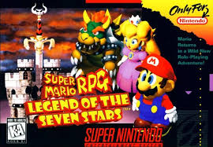
SUPER NINTENDO
TARROVISIONCH 10
NO SIGNAL
Inserta gameplay aqui
SUPER MARIO RPG
SNES · 1996 · SQUARE / NINTENDO · CIB ~USD 250
▶ POR QUEEl unico Mario RPG en la era 16-bit y la ultima colaboracion Nintendo+Square antes de que Squaresoft se fuera a PlayStation. Bajo fuerte de precio -el remake de Switch (2023) parece haber saciado la demanda del original en vez de dispararla.
#9
USD 341
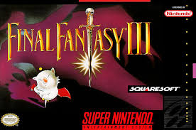
SUPER NINTENDO
TARROVISIONCH 09
NO SIGNAL
Inserta gameplay aqui
FINAL FANTASY VI
SNES · 1994 · SQUARESOFT · CIB ~USD 341
▶ POR QUEEl JRPG mas prestigioso del SNES, pero el precio bajo fuerte -tiene mas ports y relanzamientos (PS1, GBA, moviles) que casi cualquier otro RPG de la lista, lo que le resta presion al cartucho original.
#8
USD 479
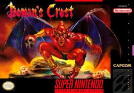
SUPER NINTENDO
TARROVISIONCH 08
NO SIGNAL
Inserta gameplay aqui
DEMON'S CREST
SNES · 1994 · CAPCOM · CIB ~USD 479
▶ POR QUESpinoff oscuro de Gargoyle's Quest, salido al final del ciclo SNES con poca promo. Gameplay tipo Castlevania en mundo gotico, calidad rara que la comunidad redescubrio post-2010.
#7
USD 737
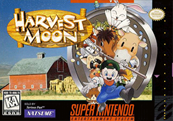
SUPER NINTENDO
TARROVISIONCH 07
NO SIGNAL
Inserta gameplay aqui
HARVEST MOON
SNES · 1996 · PACK-IN-VIDEO · CIB ~USD 737
▶ POR QUELanzamiento al final del ciclo de vida SNES = tiraje bajo. Boom retroactivo del genero farming sim (Stardew Valley, Story of Seasons) disparo la demanda del original.
#6
USD 856
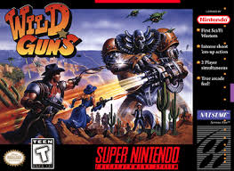
SUPER NINTENDO
TARROVISIONCH 06
NO SIGNAL
Inserta gameplay aqui
WILD GUNS
SNES · 1994 · NATSUME · CIB ~USD 856
▶ POR QUEMezcla rara: western steampunk + galeria de tiros estilo Cabal. Bajo fuerte de precio pese al remaster Wild Guns Reloaded (2016) -el remaster parece haber saciado demanda en vez de dispararla.
#5
USD 893

SUPER NINTENDO
TARROVISIONCH 05
NO SIGNAL
Inserta gameplay aqui
CHRONO TRIGGER
SNES · 1995 · SQUARE · CIB ~USD 893
▶ POR QUEEl JRPG perfecto. Status legendario + ports posteriores no matan el deseo de tener el cartucho original con la caja amarilla de Square. Box arts en buen estado son raros porque la caja era brillosa y se rayaba facil.
#4
USD 1,329
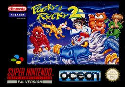
SUPER NINTENDO
TARROVISIONCH 04
NO SIGNAL
Inserta gameplay aqui
POCKY & ROCKY 2
SNES · 1994 · NATSUME · CIB ~USD 1.329
▶ POR QUESecuela de un cult shoot 'em up japones con miko anime estetica. Tiraje NTSC minimo. Subio de precio -reconocido cada vez mas entre fans del shmup y del run 'n' gun cute.
#3
USD 1,525
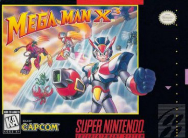
SUPER NINTENDO
TARROVISIONCH 03
NO SIGNAL
Inserta gameplay aqui
MEGA MAN X3
SNES · 1995 · CAPCOM · CIB ~USD 1.525
▶ POR QUEUltimo de la trilogia X en SNES, lanzado tarde cuando todos miraban PS1. En EEUU solo salio en SNES (Japon tuvo SNES + PS1 + Saturn) -esa exclusividad regional explica el precio alto.
#2
USD 2,938

SUPER NINTENDO
TARROVISIONCH 02
NO SIGNAL
Inserta gameplay aqui
EARTHBOUND
SNES · 1994 · APE / HAL · BIG BOX CIB ~USD 2.938
▶ POR QUELa "big box" americana incluia el cartucho, caja del tamaño de un VHS y la player's guide oficial (160 paginas a color con stickers scratch-and-sniff). El UNICO juego que aparece en top mundial Y top precios.
#1
USD 3,500
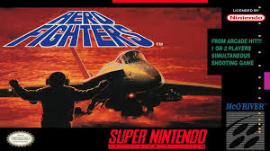
SUPER NINTENDO
TARROVISIONCH 01
NO SIGNAL
Inserta gameplay aqui
AERO FIGHTERS
SNES · 1994 · VIDEO SYSTEM · CIB ~USD 3.500
▶ EL TRONOShoot 'em up port de arcade Neo-Geo, tiraje ridiculamente bajo en NTSC. SUBIO al primer lugar del ranking -los shmups SNES son escasos de por si, y este es el mas perseguido de todos.
FUERA DEL TOP · PERO IMPOSIBLES DE IGNORAR
VARIANTES & EXCLUSIVOS
Estas no entran al top de mercado porque no se compran por catalogo: aparecen cuando aparecen. Variantes de color, exclusivos de Blockbuster, NFRs de torneo. Las vemos una por una.
VARIANTE COLOR
USD 500
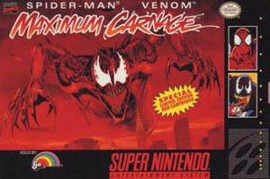
SUPER NINTENDO
TARROVISIONCH 01
NO SIGNAL
Inserta gameplay aqui
SPIDERMAN: MAXIMUM CARNAGE [RED CART]
SNES · 1994 · ACCLAIM · RED CART ~USD 500
▶ POR QUEEl "red cartridge" -variante exclusiva en plastico rojo, no la negra comun. La negra vale 1/10. Coleccionistas Marvel + cazadores de variantes la suben.
VARIANTE COLOR
USD 300
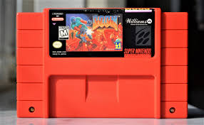
SUPER NINTENDO
TARROVISIONCH 02
NO SIGNAL
Inserta gameplay aqui
DOOM [RED CART]
SNES · 1995 · WILLIAMS · SUPER FX 2 · RED CART ~USD 300
▶ POR QUEOtro cartucho rojo SNES con la novedad de correr el motor de Doom en 16 bits con el chip Super FX 2. Edicion especial roja por el "marketing infernal".
BLOCKBUSTER EXCLUSIVE
USD 2,937
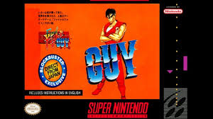
SUPER NINTENDO
TARROVISIONCH 03
NO SIGNAL
Inserta gameplay aqui
FINAL FIGHT GUY
SNES · 1994 · CAPCOM · BLOCKBUSTER ~USD 2.937
▶ POR QUEAl Final Fight original le faltaba Guy. Capcom lanzo esta version SOLO en Blockbuster Video como alquiler. Las copias retail son rarisimas.
BLOCKBUSTER EXCLUSIVE
USD 3,500
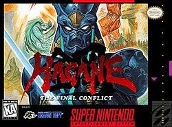
SUPER NINTENDO
TARROVISIONCH 04
NO SIGNAL
Inserta gameplay aqui
HAGANE: THE FINAL CONFLICT
SNES · 1995 · HUDSON SOFT · BLOCKBUSTER ~USD 3.500
▶ POR QUEAccion ninja en NTSC solo se vendio como exclusiva Blockbuster -nunca retail. Loose es caro, CIB es un unicornio. La caja de Blockbuster vale tanto como el cartucho.
NFR · 2.500 COPIAS
USD 6,725
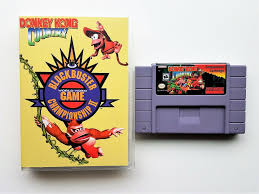
SUPER NINTENDO
TARROVISIONCH 05
NO SIGNAL
Inserta gameplay aqui
DKC: COMPETITION CART
SNES · 1994 · NINTENDO / RARE · NFR ~USD 6.725
▶ POR QUEVersion cortada de DKC para PowerFest '94 + Blockbuster Championships II. 2.500 copias vendidas por catalogo Nintendo Power, en clamshell verde iconica. Muchas clamshells se perdieron.
LIFE FITNESS EXCLUSIVE
USD 10,397
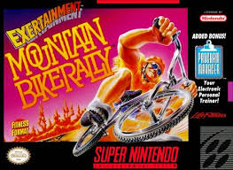
SUPER NINTENDO
TARROVISIONCH 06
NO SIGNAL
Inserta gameplay aqui
EXERTAINMENT MOUNTAIN BIKE RALLY
SNES · 1994 · NINTENDO / LIFE FITNESS ~USD 10.397 (new) / venta sellada historica USD 15.993
▶ POR QUEDiseñado para la "Exertainment Life Fitness Bike" -bicicleta estatica gamer. Solo se vendio a gimnasios con el periferico. Un combo pack sellado se subasto en 2022 por USD 15.993.
HOLY GRAIL
USD 17,550
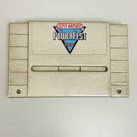
SUPER NINTENDO
TARROVISIONCH 07
NO SIGNAL
Inserta gameplay aqui
NINTENDO POWERFEST '94
SNES · 1994 · NINTENDO OF AMERICA · NFR · 2 COPIAS EN EL MUNDO
▶ POR QUENintendo fabrico 33 cartuchos para el torneo PowerFest '94 (Super Mario Kart + Mario All-Stars + Ken Griffey Jr). De los 33, desarmo 31 para repuestos. Solo 2 sobreviven. El Holy Grail absoluto del coleccionismo SNES -esto ya no es mercado, es museo.
ANALISIS DEL TOP
DOS LIGAS DISTINTAS
Top 10 mercado: late releases + RPGs populares + shmups de tiraje corto. Es lo "comprable" si tienes plata. Lo de afuera (NFR + variantes + Blockbuster + PowerFest) es otro juego -no se compra por catalogo, aparece cuando aparece, y solo importa que exista.
PROXIMA SEMANA
SEGUIMOS
Comentanos cual te sorprendio mas y si tienes alguno de estos cartuchos en tu coleccion. Proximo capitulo: arrancamos con SNES NO-LATAM, los que nunca llegaron a Chile.